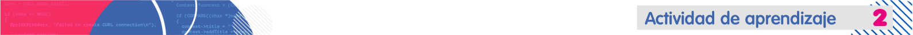

Practica la solicitud de datos por consola.
Acciones de aprendizaje
1. Aprende sobre la entrada de datos y las excepciones en Java:
- Entrada de datos con Bedoya, A. [XACA RANA]. (2017). 13 Curso Programación JAVA Entrada de datos - I/O. [Video].
2. Práctica las diferentes formas de pedir datos al usuario en la consola realizando un programa que lea un número entero e imprima:
- "Feliz día", si el número es mayor a cero.
- "Vamos muy bien" si es igual a cero.
- "Para atrás ni para coger impulso", si el número es menor a cero.
3. Pon en a prueba tus conocimientos y realiza el programa "Hola mundo" para ser revisado por el bot de autocalificación:
- Revisa el siguiente documento para comprender la nueva forma de evaluación y los resultados que observarás en el bot.
- Sube el archivo de "HolaMundo" en el siguiente enlace.
Formas de trabajo
-
Individual: el estudiante es responsable de su proceso de aprendizaje y de las actividades que realiza.
Tiempos (Semana 1)
- Trabajo autónomo del estudiante: 3 horas
- Acompañamiento docente: 1 hora.